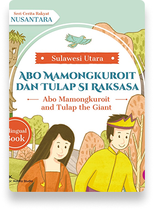
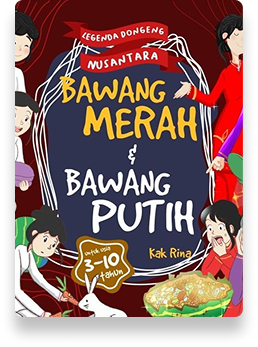
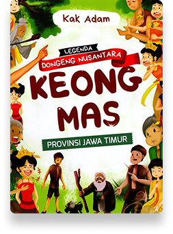
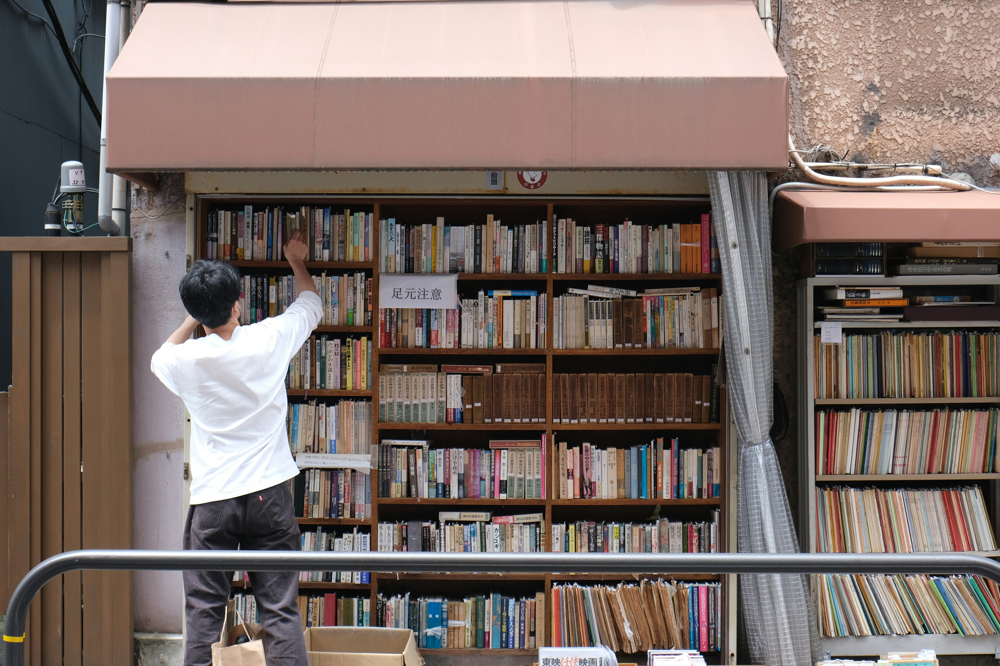
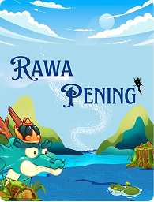
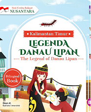

Cerita mengisahkan tentang Baro Klinting, seekor naga, anak dari Endang Sawitri, putri Kepala Desa Ngasem. Karena sebuah kutukan, Endang Sawitri harus mengandung dan melahirkan seorang anak berwujud naga seorang diri. Baro Klinting pun pergi ke Gunung Telomoyo untuk bertapa demi ...

Saat Ratu Aji Bidara Putih dilamar oleh Raja Tiongkok, dia segera mengutus menterinya untuk menyelidiki raja itu. Perdana Menteri menyelinap ke kapal kerajaan Tiongkok dan mendengar bunyi-bunyi aneh dari kamar raja. Dia pun melapor pada Ratu Aji Bidara Putih. Mendengar laporan menterinya...
"Aku ada cerita rakyat dari daerahku, yaitu “Si Pitung, Pahlawan Betawi” Cerita ini mengisahkan tentang pahlawan lokal yang berani melawan ketidakadilan dan penjajahan demi melindungi rakyat kecil.."
"Aku ada saran nih Kisah yang mirip Cinderella tapi versi Nusantara. Intinya, cerita ini mengisahkan tentang dua saudara tiri yang memperlihatkan perbedaan sikap antara kebaikan dan kejahatan. Bawang Putih yang baik hati, sabar, dan jujur sedangkan Bawang Merah yang cemburu dan jahat."
"Banyakin cerita rakyat asal usul suku pulau dong, kayak cerita 'Danau Toba' yang ada legenda Toba juga menjadi pulau volkanik bahkan sampai masuk ke daftar UNESCO."